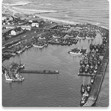
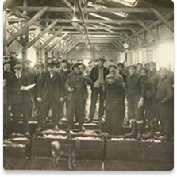
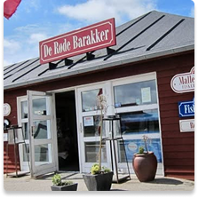
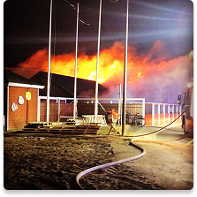
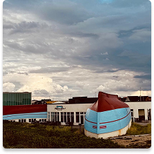

Vores historie
Thyborøn opstår
Gennembruddet af Agger Tange skaber forbindelsen mellem Limfjorden og havet og lægger begyndelsen på Thyborøns udvikling.

Fiskebyen vokser
Havnen vokser og bliver gennem de næste årtier et vigtigt centrum for dansk fiskeri.

Mallemukken bliver til
Idéen om en restaurant bygget op omkring en gammel fiskekutte bliver realiseret og skaber et unikt vartegn for Thyborøn.

Branden
Efter anden båd 'Port Said' blev lagt til, rammes restauranten af brand. Men de to ikoniske kuttere overlever og bevarer stedets særlige identitet.

En ny begyndelse
Mallemukken genopbygges af Sophie og Kasper Byskov med respekt for historien og de maritime omgivelser.

Historien lever videre
Gæster fra nær og fjern samles under kutterne og oplever smagen af Thyborøn.
